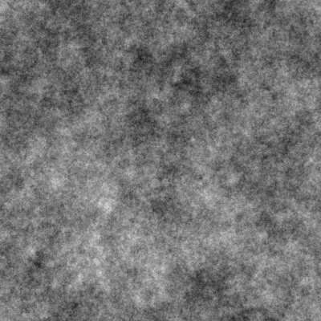
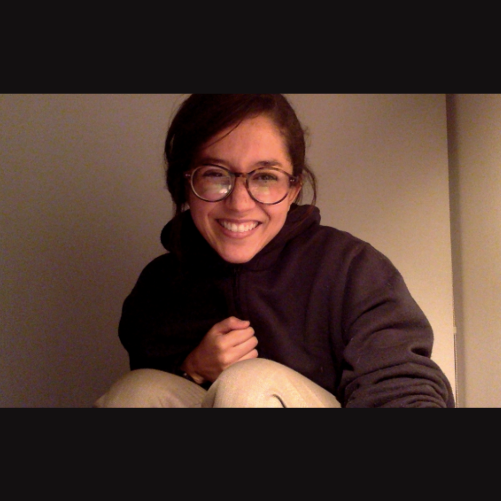
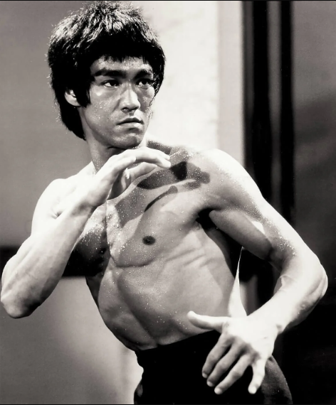
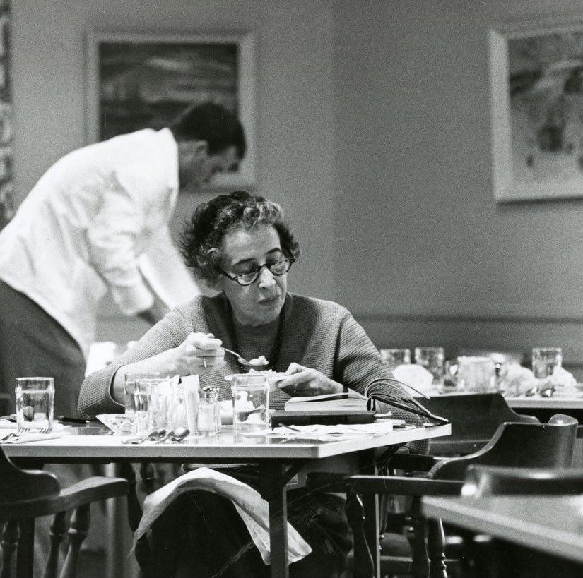

// IMG_001 · PINK_NOISE

// IMG_002 · ZOOM_002
// IMG_003 · WINDOW

// IMG_004 · ANDES_BYCOLOMBA
// IMG_005 · dey_
// IMG_006 · ZOOM_001

// IMG_007 · RETINA

// IMG_008 · MONONOKE

// IMG_009 · LEE

// IMG_010 · d
// IMG_011 · X
// IMG_012 · ARENDT

// IMG_013 · _byHillier
// IMG_014 · scan_byJenrbacon
// IMG_015 · Toth